水果贩子教你怎么挑好水果!
西瓜 火龙果 山竹 芒果 哈密瓜、香瓜 苹果 榴莲 荔枝 梨 葡萄 桃 草莓 木瓜 黄瓜 樱桃 西红柿 水果贩子经验分享1、西瓜底部的圈圈，越小越好，相反的，底部圈圈越大，皮越厚，越难吃。
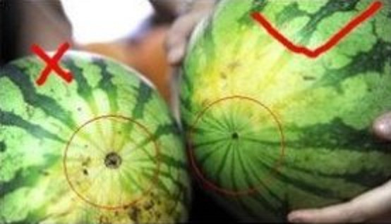
2、颜色最好挑青绿色，不要雾雾白白的。
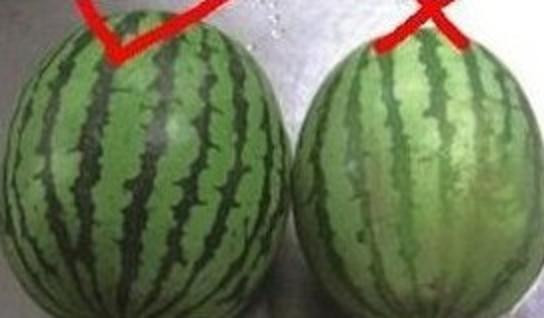
3、西瓜纹路整齐的，就是好瓜。
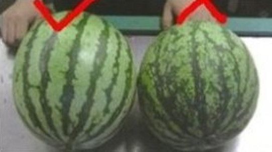
4、西瓜头，就是所谓的蒂头，若是直直的一条线，就不要，但若是卷曲圈起来的，就很甜。
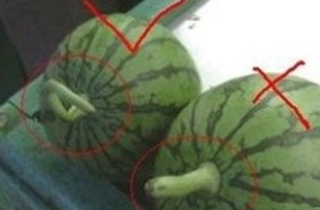
1、越重越好。火龙果越重，则汁越多、果肉也越丰满，所以购买火龙果时应用手掂掂单个火龙果的重量，越重的越好。
2、越红越好。表面红色的地方越红越好，绿色的部分也要越绿的越新鲜，若是绿色部分变得枯黄，就表示已经不新鲜了。
3、越胖越好。不要挑选瘦长型的，越胖代表越成熟，清甜而不会有生涩的味道。
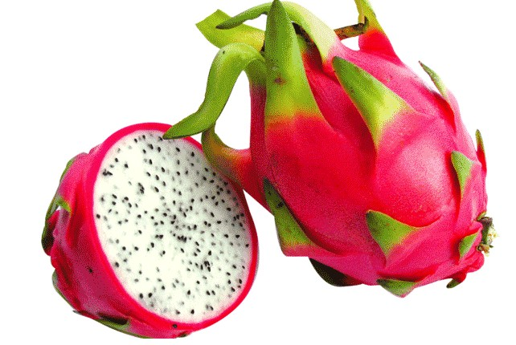
山竹小秘密：屁股上有几个瓣，里面就有多少颗。。。
7或8个的比较好，还有上面的柄要新鲜颜色要嫩，不要干枯，那样挑出来的确很好吃，水分也多
还有就是挑的时候如果外壳都硬了那说明坏掉了。
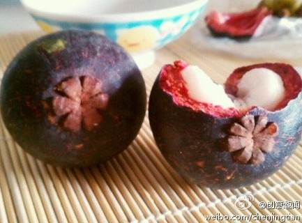
挑选时应该挑中等偏小的。新鲜山竹果蒂呈绿色，果皮呈暗紫红色，捏起来外壳比较软，有弹性，打开以后，里面的肉质是纯白色的。若以拇指和食指轻捏能将果壳捏出浅指印，表示已成熟，如果外壳硬得像石头一样，多半不能吃了。山竹外壳见风容易变干，建议吃多少买多少。
芒果品种：鸡蛋芒(福建叫法)，香味比较浓郁形状较椭圆，果肉是橙色的，如小鸡蛋那么大，超甜超香，适合榨汁，汁极浓稠，可兑些淡淡的蜂蜜水;比鸡蛋芒稍差些的是腰芒，形状像小猪腰，果肉是黄色的，有的是淡黄，果核很薄，这种芒果很甜，但香味不如鸡蛋芒;还有象牙芒、贵妃芒，不够熟时会有些涩、酸。另外有一种绿色的芒果青芒，比黄色的更甜。
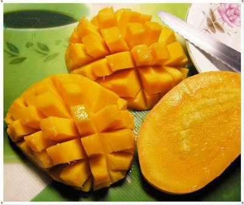
挑 选：选芒果一定要选比较饱满的、圆润的，不软不硬的，颜色黄的纯正的，香味老远就能闻到的，没有斑点的(有斑点的是从里面烂掉了)，闻香味，挑选大约8分熟的，放一两天熟透就可以吃了，买熟透的即吃的芒果，可以看一下芒果的根部，应该是很清爽的，没有出水，同时皮也不能皱起，那种水份已经没有了。
芒果的汁液有一种成分，对皮肤不好，所以吃时最好切成一小块一小块的，不要碰到皮肤和嘴唇，这样就好了。
挑选白色的甜瓜应该选瓜比较小，瓜大头的部分没有脐，但是有一点绿，这种是一棵瓜的第一个叶子结的，比较好挑，因为长的小。还有就是挑有脐的，脐越大的越好，按一下脐的部分较软的.闻一闻香瓜的屁股，有香味的就是好又甜的好瓜。
挑哈密瓜要挑网纹粗且密的,闻到较浓的香气。
买任何瓜的时候，和瓜秧不连在一起的那头是凹进去的就是熟、好、甜的。
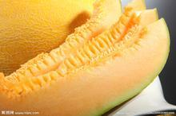
富士应该挑那种看上去一丝一丝的，黄里透红的，这样的一般壤是黄的，又脆又甜还有一点点酸，味很正。千万不要挑绿里透一点点红的，这样的，一般味道都有点寡淡的，水分可能也不少，但甜味一定不行。
正宗的红富士苹果放在桌子上都是歪的，没有正的，否则肯定不是正宗，颜色不能特别红，有些粉红，且不是红成一片，要挑有许多红丝的那种，还有“肚脐”要陷下去深的，这样才甜。皮上麻点多的,用手指轻轻弹，清脆有回声的，是又甜又脆的。
买苹果(主要是红富士)，最好选外表为条状红的(称“条红”)，而且红里面有一些黄色。那种苹果脆性、汁水多、很香甜。
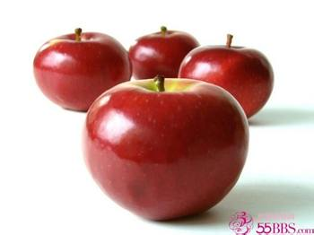
榴莲挑香味浓的，稍微裂开一点的，看得到里面的果肉软软糯糯的，又绝不湿漉漉的，果肉相对细长、金黄的，果形较丰满的外壳比较薄些，果肉的瓣也会多些。那种长圆形的，一般外壳较厚，果肉较薄。挑选时壳以黄中带绿为好。
如何正确挑选榴莲
1、听声音，轻摇几下，有声音代表榴莲可以吃了。
2、看颜色，选择颜色偏黄的，不要挑绿色的，黄色的通常比较熟。
3、看大小，榴莲个头大的水分足，够甜。小山丘越多肉越多。里面的肉也越多，一般一个成熟的榴莲3-5斤重。
4、选择开裂的榴莲（自然开裂），说明榴莲足够成熟。
5、闻气味，好的榴莲气味浓烈。
6、看重量，同样大小的榴莲轻的榴莲核小，重的榴莲核大，轻的榴莲快能吃了。
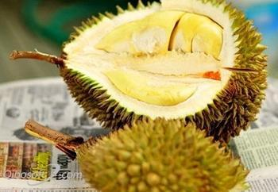
选荔枝的时候要选表皮凹凸不平,纹路深的那种，那种荔枝通常都是小核的!而表面光滑平坦的那种，一般核都很大!不仅要表面红润，而且捏起来要饱满有弹性，如果没弹性很软感觉有点空就是放的时间长了.还可以轻轻按一下荔枝的尾部，如果感觉软，没有按到硬物，一般说来核是比较小的，如果可以感觉按到硬物，一般是大核。
荔枝的中间有一条缝，只要沿着那个方向轻轻一咬，如果没洗嫌脏的话用手轻轻一捏也行，壳就会自动裂开了。
荔枝的挑选：
1、手感，先拿在手里轻捏：好：用手指微按果实感觉紧硬坏：微按果实感觉松软。
2、看外观：好：果皮新鲜、顏色呈暗紅色，果柄鲜活不萎，果肉发白。
3、再教两个小诀窍，是南方荔枝园里的果农传授的：
一看荔枝头部。如果荔枝头部比较尖，表皮上的“钉”密集程度比较高的话，那就说明荔枝还不够成熟，反之就是一颗成熟的荔枝。
二看壳，龜裂片? "平坦，縫合線明顯，这样的荔枝一定是甘甜无比的，不信就试吧！真正新鲜的荔枝从外表看，颜色不是很鲜艳，暗红稍带绿，没异味。
坏：果皮为黑褐或黑色，汁液外渗。果肉发红。
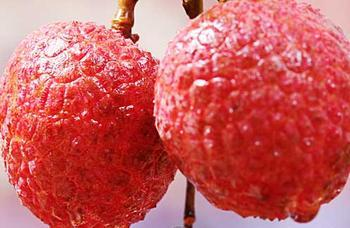
梨要挑母的，细腻多汁且甜。母的，就是顶上的窝要选双数的，脐深的，脐周围比较圆,把的根部粗的
辨别公母方法：
吃梨也有公母之分，母梨肉多核小、细致多汁
买梨时看梨的底部，母梨是有着圆圆的光滑的深窝窝，公梨的尾部是像朵花似的。
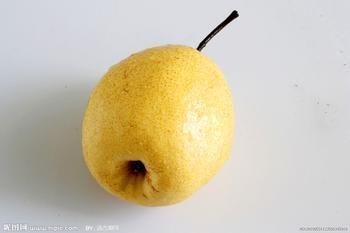
葡萄要挑整串饱满的，一粒粒长得密密的那种,先闻一下香味，果香浓的才买.如果冬天挑葡萄，千万要买新鲜的。不要看果粒，要看梗，新鲜的葡萄，梗硬挺，鲜艳的绿色。当颜色变深褐色，软啪啪的，就是摘下来比较久的了，这样的葡萄虽然可能果粒看上去也比较挺实，可是其实都是低温保存的结果，并不是真的新鲜。买“玫瑰香”葡萄尤其要注意，这种小粒的果实不容易保存。
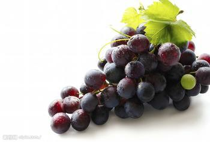
香蕉不要挑两头有绿色的，那是处理过的，并且个儿不要太大，小些的香蕉才好，要圆润的，不要有棱角的才是好香蕉,正常黄色，略带芝麻点的。
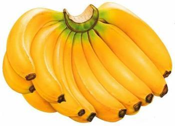
选桃子首要是闻香味，越香越甜,通常外观都不太好看,挑不太软的，上面带个小尖尖。
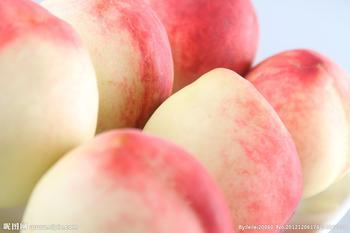
草莓不买太红的，颜色越是鲜艳就越酸，红里带点白的草莓最香甜了.买草莓的时候不要选个非常大，形状特奇怪的那种，要选大小一致的，小一点更安全，颜色不要特别红，里面最好带点白色的小点点的。
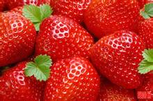
木瓜也分公母，肚子大的是母的，比较甜。一般挑鼓肚子的，表面斑点很多，颜色刚刚发黄摸起来不是很软的那种。如果表面上还有点胶质的东西，那没关系，是糖胶，这样的会比较甜.买木瓜如果要马上吃，就要挑黄皮的，但是不可以太软，这样的木瓜才甜而不烂。如果做木瓜排骨汤之类的，要买没有完全成熟的青皮木瓜，这种木瓜当然是比较硬，一般不生吃。成熟的时候一般皮就黄了，可以当水果吃。如果做甜品的话，就要买红色的夏威夷木瓜，很甜
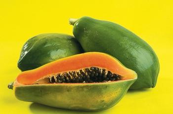
选黄瓜，千万别买肚大把小的，这是打激素的。
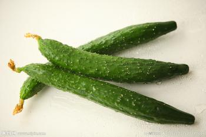
选樱桃，要看果柄是否新鲜。新鲜的果柄绿绿的，放置时间长的果柄发黑。然后看果皮是否起皱，起皱说明果实摘下来放的太久，失去水份。
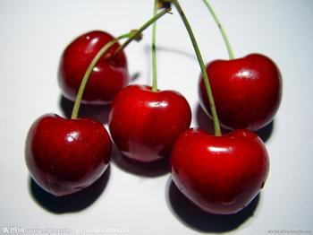
挑选西红柿时，不要挑选有棱角的那种，也不要挑选拿着感觉分量很轻的，都是催红剂作的怪。要买这种表面有一层淡淡的粉一样的感觉，而且蒂的部位一定要圆润，如果蒂部再带着淡淡的青色，就是最沙最甜的了。不要买带尖和底很高的，要那种整体看起来都比较光滑的，带尖的都是春天抹快速催熟的东西抹多了。选西红柿要选颜色粉红、浑圆，表皮有白色的小点点的。
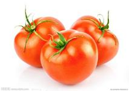
建议吃水果根据季节。如西瓜上市的季节吃西瓜，桃子多的日子吃桃子。
要挑选大小适中的水果，太大的极有可能是激素、膨大剂什么的催的。总之，太大的最好不要买，无论是水果还是河里的螃蟹、鱼和虾!
北方卖的南方水果大都是用乱七八糟的东东催熟的，因为南方果子熟了后不好运输，只能是生的运过来再加工熟，所以尽量吃本地水果也是一个方法。
一般一闻、二看，三捏一捏。先闻有没有水果应该有的香味，也闻闻有没有其它的怪味。二看有没有发黑或者烂的地方。三捏一捏，就不用多说了。
挑水果有一个秘诀，无论什么水果，在蒂的部位凹得越厉害就越甜。
选水果的原则是颜色好看有光泽的，还要看水果的根部是不是够凹，有没有一个圈圈，有的话就是母的，母的水果比较甜。